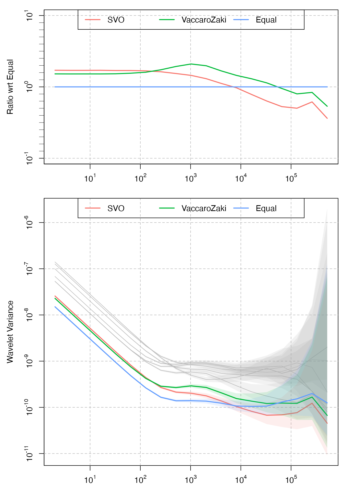

In Zhang et al. (2021), we introduce a method allowing to compute synthetic (or average) signals issued from multiple correlated and/or even non-stationary signals. In a nutshell, this method minimizes a weighted average of the wavelet variance of the synthetic signal whose weights can be chosen depending on the application at hand. This method is illustrated with gyroscopes which often contain non-stationary processes such as random walks. This package implements the method of Zhang et al. (2021), called Scale-wise Variance Optimization or SVO, as well as the approach of Vaccaro and Zaki (2017), which is used as a comparison.
We consider the example presented in Zhang et al. (2021), where a virtual gyroscope is created fusing 12 real MEMS from two device families, InvenSense ICM-20689 and Bosch BMI055. The employed data is included in the package and can be loaded as follows:
We first need to chose which scales we would like to minimize in the Wavelet Variance plot. In SVO, this is obtained choosing weights \(\omega\) such that \(\sum{\omega} = 1\). For example, if one is interested in minimizing the high scales of the wavelet variance, suitable weights can be obtained as follows:
n_scales = log2( nrow(Xt) ) - 1
tau = 1:n_scales
weights = exp(tau-15)/(1 + exp(tau-15))
weights = weights/sum(weights)
plot(tau, weights, xlab = "Wavelet variance scales", ylab = "Weight", type = "l")Once weights have been defined, one can obtain the coefficients to be used in the linear combination of single gyroscope as follows:
c_hat = find_optimal_coefs(Xt, weights)The obtained virtual gyroscope can be compared with what would be obtained using equal coefficients using the conveninence ‘plot_virtual_gyro’ function:
plot_virtual_gyro(Xt, c_hat, names = "SVO")In the following we will provide the instructions to reproduce the Monte-Carlo simulations presented in Zhang et al. (2021), Section V.A and V.B
In this section we simulate data for six gyroscopes whose noise error model is composed by a White Noise and a Random Walk (with correlated innovations), as in Zhang et al. (2021), Equation (11)
# definition of the noise parameters
sigma_wn = c(2.805556e-07, 1.977778e-07, 1.361111e-07, 1.063889e-07, 1.069444e-07, 2.538889e-07)
sigma_rw = matrix(c(
2.550583e-14, -8.573388e-16, 1.028807e-14, -1.628944e-14, -2.400549e-14, -5.572702e-15,
-8.573388e-16, 4.715364e-14, 1.993313e-14, 1.071674e-15, 3.215021e-15, 2.079047e-14,
1.028807e-14, 1.993313e-14, 3.489369e-13, -1.281722e-13, 5.572702e-15, -3.022119e-14,
-1.628944e-14, 1.071674e-15, -1.281722e-13, 2.091907e-13, 4.093793e-14, 5.444102e-14,
-2.400549e-14, 3.215021e-15, 5.572702e-15, 4.093793e-14, 5.551269e-14, 2.443416e-14,
-5.572702e-15, 2.079047e-14, -3.022119e-14, 5.444102e-14, 2.443416e-14, 2.501286e-13
), nrow = 6, byrow = T)
N = 2^20
set.seed(1)
Xt = simulate_wn(N, sigma_wn) + simulate_corr_rw(N, sigma_rw)We define weights in order to minimizie the highest scales of the Wavelet Variance and we compute the coefficients according to SVO:
n_scales = log2( N ) - 1
tau = 1:n_scales
weights = exp(tau-13)/(1 + exp(tau-13))
weights = weights/sum(weights)
c_svo = find_optimal_coefs(Xt, weights)As a comparison, we also compute the optimal coefficients according to the method presented in Vaccaro and Zaki (2017). Those can be calculated as follows:
# Estimate the Q matrix (the covariance of the Random Walk innovations)
Q_hat = algorithm_2(Xt)$Q
# Compute the coefficients
c_vaccarozaki = find_optimal_coefs_vaccaro(Q_hat)The results can be seen in the following plot. In this case, since the assumed model for the simulated gyroscopes satisfies the parametric assumptions in Vaccaro and Zaki (2017), the results are mostly similar.
plot_virtual_gyro(Xt, c_svo, c_vaccarozaki, names = c("SVO", "VaccaroZaki"))In this example we simulate data for six gyroscopes whose noise error model is composed by a White Noise and three first-order Auto-regressive processes (with correlated innovations), as in Zhang et al. (2021), Equation (14)
phi_ar1_1 = rep(0.9998705, 6)
sigma_ar1_1 = matrix(c(
6.713833e-13, 1.515552e-13, 1.245013e-13, -7.117931e-15, 4.284888e-14, 9.577566e-14,
1.515552e-13, 5.607230e-13, 2.264650e-13, -7.737235e-14, 2.810539e-14, 1.440987e-13,
1.245013e-13, 2.264650e-13, 7.499051e-13, -1.626870e-14, -5.293172e-14, -9.995748e-14,
-7.117931e-15, -7.737235e-14, -1.626870e-14, 1.207920e-13, -1.873054e-14, 6.817015e-14,
4.284888e-14, 2.810539e-14, -5.293172e-14, -1.873054e-14, 7.499327e-13, 2.414762e-13,
9.577566e-14, 1.440987e-13, -9.995748e-14, 6.817015e-14, 2.414762e-13, 6.461646e-13
), nrow = 6, byrow = T)
phi_ar1_2 = rep(0.9975214, 6)
sigma_ar1_2 = matrix(c(
4.008129e-12, -1.806110e-13, -4.477015e-13, -1.048567e-12, 2.546714e-12, -2.349504e-12,
-1.806110e-13, 1.177847e-11, -1.290506e-13, -3.741980e-12, -5.110108e-13, 2.849421e-12,
-4.477015e-13, -1.290506e-13, 1.965775e-11, 2.026288e-12, -1.750890e-12, 1.446290e-12,
-1.048567e-12, -3.741980e-12, 2.026288e-12, 1.309887e-11, 2.317561e-13, 4.127606e-12,
2.546714e-12, -5.110108e-13, -1.750890e-12, 2.317561e-13, 1.928375e-11, 5.714532e-12,
-2.349504e-12, 2.849421e-12, 1.446290e-12, 4.127606e-12, 5.714532e-12, 1.434466e-11
), nrow = 6, byrow = T)
phi_ar1_3 = rep(0.9999933, 6)
sigma_ar1_3 = matrix(c(
5.062006e-14, -6.432804e-15, 3.260125e-15, 6.977995e-15, 1.727949e-14, 7.385838e-15,
-6.432804e-15, 1.612038e-14, -3.184490e-15, -3.836343e-15, -7.682144e-15, -1.000440e-15,
3.260125e-15, -3.184490e-15, 2.102923e-14, 9.145839e-16, 3.985049e-15, -1.377599e-15,
6.977995e-15, -3.836343e-15, 9.145839e-16, 7.881771e-15, -1.291789e-15, 5.191186e-15,
1.727949e-14, -7.682144e-15, 3.985049e-15, -1.291789e-15, 5.442670e-14, 3.786316e-15,
7.385838e-15, -1.000440e-15, -1.377599e-15, 5.191186e-15, 3.786316e-15, 4.990004e-14
), nrow = 6, byrow = T)
set.seed(1)
Xt = simulate_wn(N, sigma_wn) +
simulate_corr_ar1(N, phi_ar1_1, sigma_ar1_1) +
simulate_corr_ar1(N, phi_ar1_2, sigma_ar1_2) +
simulate_corr_ar1(N, phi_ar1_3, sigma_ar1_3)We again estimate the coefficients for the virtual gyroscopes with SVO and the method proposed in Vaccaro and Zaki (2017) and compare the results. In this case, SVO, which does not rely on any parametric assumption on the underlying stochastic processes, achieves better results.
c_svo = find_optimal_coefs(Xt, weights)
# Estimate the Q matrix (the covariance of the Random Walk innovations)
Q_hat = algorithm_2(Xt)$Q
# Compute the coefficients
c_vaccarozaki = find_optimal_coefs_vaccaro(Q_hat)
plot_virtual_gyro(Xt, c_svo, c_vaccarozaki, names = c("SVO", "VaccaroZaki"))
Vaccaro, Richard J., and Ahmed S. Zaki. 2017. “Reduced-Drift Virtual Gyro from an Array of Low-Cost Gyros.” Sensors 17 (2). https://doi.org/10.3390/s17020352.
Zhang, Yuming, Davide A. Cucci, Roberto Molinari, and Stéphane Guerrier. 2021. “Scale-Wise Variance Minimization for Optimal Virtual Signals: An Approach for Redundant Gyroscopes.” http://arxiv.org/abs/2106.15997.